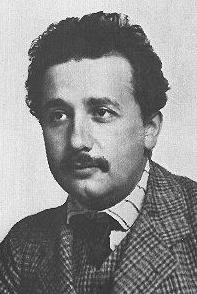
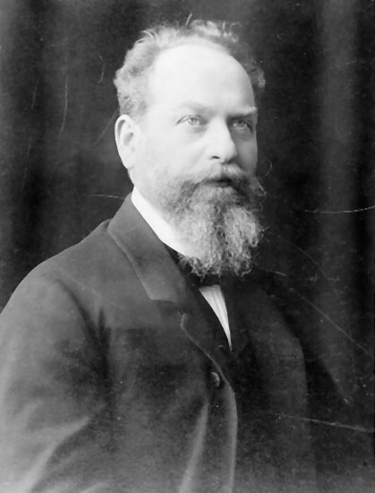

4) Modern Düşüncenin Başarısızlığı
‘Benim özümde her zaman, sonsuza dek korkunç bir acı vardır tuhaf,
yabanıl bir acı–evrende var olanın ötesinde birşeyleri arıyorum’
Bertrand Russell
irinci Dünya Savaşı’nı takip eden seksen yılda bilgi, tarihte daha önce hiç olmadığı kadar hızlı gelişti. 1. Dünya Savaşı sonrasındaki dönem umutla başladı; bazıları da gerçekleşti. Batılılar daha uzun yaşarlar, daha iyi sağlık şartlarına, daha yüksek yaşam standartlarına, daha iyi siyasi düzene sahiptirler. Dahası, daha bireyselcidirler, sosyal ve hümanist (insancıl) faaliyetlerle geçmişte olduğundan daha fazla ilgilenmişlerdir. Günümüzde çok az insan 16. yüzyılda yaşamayı tercih ederdi. ‘Pragmatik’ bir açıdan bakıldığında, birçok şeyin gelişmiş olduğuna ikna olabiliriz. Fakat yine de 20. yüzyıl, insanoğlunun en trajik dönemlerinden birine dönüşmüştür. Bu yüzyılda çok fazla insan açlık çekiyor, sayısız insan öldürülüyor, ve dünyanın hassas olan doğal dengesi bozuluyordu. Çok çeşitli ve karmaşık kitle imha silahları üretiliyor, bu nedenle dünyanın uzun vadedeki geleceğine şüphe içinde bakılıyordu. Belli ki, yanlış giden bir şeyler vardı.
19. yüzyıl, 17. ve 18. yüzyıl filozoflarının doldurmakta başarısız oldukları boşluğu doldurmaya çalışır. Batılı insan artık, geleneksel ve dini kısıtlamalardan giderek daha da özgür olmuştur. 20. yüzyılın siyasi ve entelektüel aydınları önderlik etmeleri gerektiği konularda yetersiz kaldılar. Onların belirli bir ahlaki standart oluşturmaktaki başarısızlığı birçok halk kitlesini etkileyen nice demagoga kapı açmış oldu. Tarih sahnesi, Lenin, Stalin, Hitler ve Mao gibi birçokları için hazırdı. Çeşitli soykırımlar döneme damgasını vurdu: Japonya Çin’i yakıp yıktı, Almanlar Yahudiler’i, Ruslar ve Kamboçyalılar da kendi vatandaşlarından milyonlarcasını öldürdü. Hutular Tutsileri öldürdü, Sırplar Hırvatları ve Kosovolıları katletti. Dünya Savaşları, Soğuk Savaş ve daha pek çok bölgesel savaş oldu. Fakat Nietzsche’nin, hatta Kierkegaard’ın dünyasında bile, gerçekte doğru ya da yanlışı, her insanın kendisinin belirlemesi gerekmez miydi?
18 ve 19. yüzyıl düşünürlerinin, gelişmenin aklın yönetiminde olduğu yönündeki iyimser görüşlerinin tersine, modern felsefenin en temel keşiflerinden biri aklın, insanı ilgilendiren konularda çok az bir rol –eğer varsa– oynuyor olmasıydı. Gerçekte varılan sonuç gelişmenin bilebilme eylemine zarar veriyor olmasıydı. Genç Yahudi dahi Albert Einstein’ın yüzyılın başlarında fizik alanındaki büyük buluşu her şeyin göreli olduğu görüşünü sağlamlaştırdı.
A. Albert Einstein (1879-1955): Rölativiteden Rölativizme
Albert Einstein’dan bilimle ilgili bölümde bahsedilmesi bekleniyor olabilir fakat 1905’te, daha 26 yaşındayken yayınlanan tezi, ‘Hareket Eden Cisimlerin Elektrodinamiği’ modern düşünce üzerinde öyle büyük bir etki yarattı ki, daha sonraki felsefi akımlar ele alınırken Einstein’ın bu görüşünün de göz önünde bulundurulması gerekiyor. Bu tezde Einstein belirli koşullar altında uzaklığın nasıl kısaldığını ve zamanın nasıl yavaşladığını açıkladı. Başka bir deyişle, o güne dek sabit mutlaklar oldukları düşünülen uzay ve zamanın bile koşullara bağlı olduğu ispatlandı. Onun Özel Rölativite (Görelelik) Teorisi olarak bilinen bu savı, kainatta bir yerlerde değişmeyen mutlak değerler olduğunu savunan görüşe yeni bir darbeydi.
1907’de Einstein ünlü formülü E=mc2 (Enerji[E] = kütle[m] x ışık hızının karesi [c2] ) ile her kütlenin bir enerjiye sahip olduğunu gösterdi. Bu formül Atom Bombası’nın yapımı için teorik temeli oluşturdu. 1916’da kapsamlı bir çalışma olan, Kütle Çekim Kuvveti (Gravitasyon) ve Rölativite Kuramı (“Gravitation and the Principle of Relativity”) gizlice İngiltere’ye götürüldü ve Kraliyet Astronomi Cemiyeti sekreteri Dr. Arthur Eddington’a sunuldu. Buna göre, Einstein’ın Genel Rölativite Teori’sinin doğru olduğu kanıtlandığı taktirde, Newton fiziğinin tamamen değiştirilip düzeltilmesi gerekiyordu. Eddington’un güneşin etrafındaki yıldızların dünyada iki farklı konumdan bükülen ışınlarını ölçerek Einstein’ın teorisini doğruladığı deneyi, halkın büyük ilgisini çekse de, çoğu kimse bu teoriyi anlaşılmaz ve rahatsız edici buldu. Mutlak bir zaman ve uzay kavramının geçersiz olduğu, hareketin ise eğrisel olduğu kanıtlandı. Filozofların duyurdukları gibi dünya ve dünyadaki her şey göreceliydi!
Bu nedenle, 1920’lerin başlarında hiçbir şeyin mutlak olmayışı düşüncesinin oldukça popüler olması şaşırtıcı değildir. Rölativite, yanlış ama kaçınılmaz bir biçimde rölativizme kapı açtı. Eğer zaman ve uzay göreceli ise, iyi, kötü, bilgi, değerler ve etik gibi kavramlar da göreceli olamaz mıydı?
Rölativiteden rölativizme geçiş, pratikte bir Yahudi olmasa da kişisel bir Tanrı’nın varlığını kabul eden ve mutlak doğru ve yanlış değerlerine inanan Einstein’ı rahatsız etti. ‘Katıksız bir yasaya ve nesnel olarak varolan bir dünya düzenine inanıyorum, ve bunu spekülatif bir şekilde betimlemeye çalışıyorum’ diye yazmıştı. Fakat kendi denkleminin Hiroşima ve Nagazaki’de atom bombasının kullanılmasına neden olduğunu ve rölativizmin Batı dünyasının ahlaki yapısına büyük ölçüde zarar verdiğine tanık oldu. Yaşamının sonuna yaklaştığında “keşke basit bir saatçi olsaydım” dediği zamanlar olmuştu (Johnson 1996:4).
B. Edmund Husserl (1859-1938): Fenomenoloji (olaybilim)
Edmund Husserl’e göre göreceli bir dünyada önem taşıyan –gerçekte geriye kalan– tek unsur insan bilincine etki eden tek şeydi. Fenomenoloji insan bilincine etki eden insan tecrübelerini, harici teori, varsayım ve tümdengelim yöntemlerinden bağımsız olarak tanımlamayı amaçlayan bir 20. yüzyıl felsefi akımıdır. Gerçekte ampirizmin (deneycilik) biçim değiştirmiş halidir. ‘Fenomenoloji’ terimi ilk olarak Alman filozof Edmund Husserl tarafından türetilmiş; filozofun görevinin olguların temel unsurları üzerinde derin düşünmek olduğunu ifade ettiği kitabı Mantıksal İncelemeler’de (“Logical Investigations”) (1900) kullanılmıştır. Husserl, insan bilincinin, belirli herhangi bir zamanda zihnin kendisini hangi objeye doğru yönlendireceğine karar veren, değişmeyen yapıları içinde barındırdığını öne sürdü. Objeler üzerinde düşünürken, zihnin kendi içinde hatırlamak, arzu etmek ve kavramayı barındırdığını, bunların anlam olarak adlandırıldığını ve zihnin belirli objelere doğru amaçlı bir şekilde yönlendirilmesini sağladığını ifade etti. Bilinci oluşturan şeylerin bilincin dışında var olmadıklarını; onların zihnin öğeleri olabilmelerinin basitçe bilinçteki varlıklarına bağlı olduğunu ele aldı. Bu nedenle, Husserl’e göre, bilincin özü, içeriğin belli olduğu fakat kendisinde bir şeyin bulunmadığı görünmez bir perde gibiydi (Grayling 1998:691).
Götingen Üniversitesi’nde öğretirken, belirli bir objeye doğru yöneltildiğinde zihnin kullandığı anlamları yansıtan metodunu tanımlamak için ‘fenomenolojik küçültme’ terimini kullandığı Fikirler: Salt Fenomenolojiye Genel bir Giriş (1913) adlı ünlü kitabını yazdı. Zihnin odaklanacağı şeylerin gerçekte ya var olup ya var olamayacağı söz konusu olduğu için, Husserl’in metodu varoluşu parantez içine alır, bununla üzerinde düşünülen objenin gerçekte var olup olmadığına ilişkin sorunun önemsenmemesini kasteder. Husserl’in çalışmaları farklı obje türlerini algılarken, zihnin yapısının detaylı analizini yapar. (Bunları, örneğin, bahçesindeki bir elma ağacının algılanması gibi, oldukça ayrıntılı biçimde ele alır.) Fenomenoloji herhangi bir şeyin gerçekte varolduğunu farz etmese de, yine de betimsel bir ilkedir. Husserl’in de ortaya koyduğu gibi, fenomenoloji teoriler üretmez, algılanan şeyi, yani ‘bunların kendilerini’ tanımlar.
Fenomenoloji temelde solipsistik (tekbenci) olmasından ötürü eleştirilmiştir (sadece kendisinin var olduğunu ya da bilinebilir olduğunu kabul eden düşünce sistemi). Husserl Kartezyen Meditasyonu’nda (Cartesian Meditation) (1931) insan bilincini tarih, toplum ve başka düşünceler gibi, kendisinin dışında olan bir şeye yönlendirmenin mümkün olduğunu göstermeye çalıştı. Bu kitapta, ayrıca anlamın tecrübeler temelinde nasıl oluşturulduğunun incelenmesi olarak tanımladığı ‘genetik fenomenoloji’ kavramını da ortaya koydu.
Husserl’in fenomenolojisi de ampirizmle ortak bazı eksikliklerin sıkıntısını çekiyordu: varlıkların ya da olguların özü onları algılayışımıza bağlı hale gelmişti, bu nedenle bizim dışımızdaki varoluş, sadece biz onun olduğunu algıladığımız için ‘vardı’. Başka bir deyişle, biz varlık ya da olguları algılayarak ‘yaratırız’. Bu oldukça öznel olan dünya görüşü, Husserl’in meslektaşı genç Martin Heidegger üzerinde şekillendirici bir etki yaratacaktı.
C. Martin Heidegger (1889-1976): Varoluşçu Fenomenoloji
Martin Heidegger 20. yüzyılın en etkili ve özgün düşünürlerinden biri olarak adlandırılır. Alman bir düşünür olan Heidegger varoluşçu fenomenoloji kavramını daha da geliştirmiştir. Ayrıca kendisi Hitler’in bir destekçisiydi. Bu durum çalışmalarının 2. Dünya Savaşı sonrasında kısıtlanmasına neden oldu.
En önemli eseri olan Varlık ve Zaman’da (Being and Time) (1927), felsefenin en önemli sorusu kabul ettiğini düşündüğü ‘Olmak nedir?’ sorusunu ele aldı. Bu soruyu yanıtlamaya çalışırken, ‘varlıkların kendilerine’ yönelik olan, Husserl’in fenomenolojik formülünden yararlandı (örneğin herhangi bir şeyi özünde bulunan öğelerine indirgeyebilmek için yalnızca betimleme yöntemini kullanmaya çalıştı). Alışılmışın içinde, gündelik deneyimlerde gizli olanı ortaya çıkarmak ya da tanımlamaya çalışmak için, ‘normal günlerin yapısı’ ya da ‘dünyada var olmak’ olarak adlandırdığı kavramları tanımlamaya çalıştı. Varlığın birbirine bağlı gereçler, sosyal roller ve amaçlar sistemi olduğu sonucuna vardı. Bu onu, insanların sahip olduğu ‘varlık’ kavramı üzerinde çalışmaya itti.
Ona göre insanlar, kendi yapıtları olmayan, fakat potansiyel olarak yararlı şeylere (gereçler), geçmişten gelen ve gelecekteki zihin ile şu anda kullanılabilen kültürel ve doğal objelere sahip olan bir dünyada yaşamaktadırlar. Bundan ötürü objeler, insanlık ve zaman, aralarındaki ilişkiye dair birçok şekil (sosyal rol) ortaya koymuştur. Ne yazık ki her birey dünyadaki nesnelerin, rutin gündelik hayatın ve çevresindekilerin yüzeysel ve sıradan davranışlarının arasında sıkışıp kalma riski altındadır. Varlık ve özgürlüğün (amaç) gerçek ve doğru anlamı, bir kimse ölümün ve yaşamın tamamen anlamsız olduğunun farkına varmaktan kaynaklanan korku (endişe) duygusu ile yüzleşinceye dek anlaşılmaz.
Heidegger duyu verilerinin gerçekte psikolojiyi ilgilendiren şeylerle beraber felsefeyi olumsuz yönde etkilediklerini düşünerek, zihnin kendisine duyular aracılığıyla verilenler üzerinde öznel düzenini oluşturduğu görüşünü reddetti.
Metafiziğe Giriş (“An Introduction to Metaphysics”) (1953) adlı yapıtında modern teknolojik toplumun insan yaşamını anlamdan yoksun bırakan aldatıcı bir tavır oluşturduğunu öne sürdü, bunu nihilizm olarak adlandırdı. Gerçek çağrısını unutan modern insan, var olmanın daha derin ve daha yeni anlayışlarını, eski Grekler’in elde etmeyi başarıp sonradan yitirdikleri şeylerde aramalıdır.
Heidegger kendi çalışmalarının varoluşçu yorumlarını reddetse de, ölüm, hiçlik, gerçeklik ve insanın sınırları gibi konulara olan yaklaşımı Jean-Paul Sartre’ın yanında Michel Foucault, Jacques Derrida ve Jurgen Habermas gibi düşünürler üzerinde büyük bir etki yaratmıştır. Dahası, Heidegger’in doğa ve felsefeye dair fikirleri devam eden bir öneme sahip olduklarını kanıtlamışlardır. Fenomenolojik felsefesi 20. yüzyıldaki gelişmeleri psikoloji, psikiyatri, teoloji, sosyoloji ve edebi eleştiri gibi birçok alanda derinden etkiledi. Bu etki günümüz felsefesinde önemli bir akım olarak devam etmektedir.
D. Ludwig Wittgenstein (1889-1951) & Sir Alfred Jules Ayer (1910-89): Mantıksal Pozitivizm (Olguculuk) ve Felsefi Analiz (Çözümleme)
Pozitivizm ampirik bilgiye deneyim aracılığıyla ulaşmayı amaçlayan bir düşünce sistemidir. Metafizik ve teolojiyi\dini bilgi için yetersiz kaynaklar olarak görür. Modern Düşüncenin Başarısızlığı adlı bölümde ele alınsa da, bazı pozitivist kavramların kökeni David Hume ve İmmanuel Kant’a kadar uzanır. ‘Pozitivizm’ sözcüğü ilk olarak 19. yüzyıl Fransız matematikçisi ve düşünürü olan Auguste Compte tarafından, gelişen felseyi nitelerken kullandığı ‘yapıcı eğilim’ anlamını vurgulamak için kullanılmıştır.
Doğa güçlerini kontrol etmesini sağlayacak ve böylece insanlığın, kendi iyiliği için sosyal hayatı yeniden düzenlemesine yarayacak olan bilimsel bilgiyi elde etmek ile özellikle ilgilenen Compte, pozitivizmin iki temel unsuru olduğunu ileri sürdü: 1. sistemin felsefisi, 2. bireysel ve sosyal bir davranış programıydı. Bunların ikisi tapınmanın insana yönelik olduğu tek bir ‘dine’ odaklandı.
John Stuart Mill, Herbert Spencer ve Ernst Mach gibi sosyal felsefeciler onun görüşlerinin bir kısmını adapte ettiler. Fakat 20. yüzyılın başlarında birçok düşünür gerçek bilginin kişisel deneyime dayandığını öngören geleneksel pozitivist görüşü reddederek bunun yerine gerçek bilginin bilimsel kanıtlara dayandığını savundu. Ludwig Wittgenstein, Bertrand Russell, G.E. Moore, ve A. J. Ayer’in de bulunduğu birkaç filozof mantıksal pozitivistler olarak bilinir. Wittgenstein’ı mantıksal pozitivizmin 20. yüzyıl örneği olarak ele alabiliriz.
Wittgenstein güçlü, kendine güvenen bir adam olmasının yanı sıra, hassas, gergin ve durgun biriydi. Yıllarca akademik felsefe üzerinde çok etkili bir şekilde çalışmasına rağmen 1900’lü yıllarda birçokları kendisinin gerçekten bir dahi mi yoksa, akli dengesi bozuk bir kişi mi olduğu konusunda şüphe ettiler. Fakat onun çalışmalarının insanlığa bir rehber olması, felsefeye olan güveni sarsmıştı.
Eddington’un, Einstein’ın Rölativite (görelilik) Teorisini doğrulamasından üç yıl sonra Wittgenstein, Mantık ve Felsefe Üzerine İnceleme (“Tractatus Logico-philosophicus”) (1921) adlı kitabını yayınladı. Kitabının felsefi problemler için ‘son çözümü’ ortaya koyduğuna inandı. Fakat, daha sonra kendi çıkardığı sonuçlardan birkaçını reddetti ve Felsefi İncelemeler (“Philosophical Investigations”) (ölümünden sonra, 1953’te yayınlandı) adlı yapıtında yeni fikirler geliştirdi.
Wittgenstein daha çok dilbilimsel ya da kavramsal çözümlemeye olan katkılarıyla tanınır. Bu kavramı Felsefi İncelemeler’de şu şekilde vurgulamıştır: ‘Felsefe zekâmızın dil ile bulandırılmasına karşı bir savaştır.’ Tractatus’da ifade ettiği gibi, ‘felsefe düşüncenin mantıksal olarak aydınlanmasını amaçlar.’ Başka bir ifadeyle, ‘dili’ ‘dünya’ ile eşit saydı. Dilin, basit ya da temel önermeleri elde edene kadar karmaşıklığını daha da aza indirgeyebileceğiniz, çapraşık önermelerden oluştuğunu iddia etti. Aynı biçimde, dünya da, basit ya da atomik gerçeklere ulaşıncaya dek daha az karmaşık gerçeklere indirgemeye devam edebileceğiniz gerçeklerden oluşuyordu. Bu nedenle dünya bir realite bütünlüğünden oluşur, ve bu dilin doğası ile yansıtılır. Başka bir değişle basit (dilbilimsel) gerçekler atomik gerçeklere ya da ‘farklı durumlara’ ayna tutar, kendisi buna betimsel anlam teorisi adını verdi. Yalnızca bilimsel olarak kanıtlanabilenleri yansıtan önermeler anlamlı sayılabilirdi, metafizik ve etik gibi, bilimin dışına çıkan düşünce alanları anlamlı bir ifadeye elverişli değillerdi. Bu Doğrulama Prensibi olarak bilinir. Şüphesiz Wittgenstein’ın felsefesi mantıksal olgucuları oldukça etkilemiş ve onlardan da fazlaca etkilenmiştir.
Fakat daha sonra Wittgenstein, dilin belirli sınırlar içerisinde anlaşılmasının yanlış olduğu kanısına vardı. Felsefi İncelemeler’de sözcüklerin farklı amaçlara hizmet eden araçlara benzediklerini öne sürdü. Dilin çok farklı dilbilimsel ihtiyaç ve işlevlere hizmet etmesi nedeniyle, bir kimsenin o şeyin anlamını belirlemeden önce ne çeşit bir önermenin kullanıldığını incelemesi gerekir. Başka bir anlatımla dil esnektir. Bazı önermeler bilimsel gerçekleri yansıtabilir, fakat diğerleri sorgulamak, rica etmek, veya lanet etmek, ya da emretmek, teşekkür etmek vb. için kullanılır. Bu, Wittgenstein’ın dilin; insanların farklı yöntemlerle oynadıkları bir oyun olduğu sonucuna ulaşmasına neden oldu. Örneğin bir tanrıbilimci oyunu bir bilim adamınınkinden daha farklı kurallarla oynardı. Oynanan oyunun kurallarını öğreninceye kadar, ortaya koyulan önermenin anlamını kavramak da imkansız olur. Kısacası, her önerme kullanıldığı bağlam içerisinde çözümlenmeli ve anlaşılmalıdır (bağlam belirli bir sözcük oyununun kurallarını belirler). Bu nedenle felsefi kelime oyunlarını çözmenin yolu problemi ortaya koyan dili çözümlemek ve betimlemektir.
Mantıksal pozitivizmin değiştirilmesi, Amerikan düşüncesinde önemli bir hareket olan mantıksal ampirizme kapı açtı. Bu hareket Hume’un ve Compte’un pozitivizmini Descartes’in ve Kant’ın mantıksal zorluk ve kesinlik düşüncesi ile birleştirir. Bütün kavramları gözlemlenebilen gerçeklerle sınırlandırır ve felsefenin işlevini sözcüklerin anlamlarını çözümleyerek kavramları açıklamak olarak belirler, kavramların açıklanmasının nedeni ise dilin yol açtığı belirsizliktir.
A. J. Ayer’ın kitabı, Dil, Gerçek ve Mantık (“Language, Truth and Logic”) (1936) metafizik ve teoloji üzerindeki saklı anlamları açıklayarak, mantıksal pozitivizmi akademik tartışmanın yüzeyselliğinden sıyırdı. ‘Doğrulama Prensibini’ kullanarak ifadelerin yalnızca bilimsel hipotezler gibi deneysel biçimde doğrulandıkları taktirde doğru sayılabileceklerini öne sürdü, fiziksel dünyanın dışındaki konular üzerinde tartışmayı reddetti. Tanrı’ya bilimsel olarak kanıtlanabilir bir şekilde dokunulamayacağı, hissedilemeyeceği, ya da kavranamayacağı için; O’nunla ilgili, ya da ruh veya ölümsüzlük için kullanılan dil gerçekte anlamsızdır. Tanrıbilimi ve metafizik varolan sözcüklerin ötesinde bir gerçeklik olması gerektiğini düşünen insanların içine düşmüş oldukları tuzaklardan başka bir şey değildir. Teolojik ifadeler, kişisel fikirlerin ya da amaçların ifade edilmesinden başka bir şey değildir. Böylece, Ayer bir çırpıda Tanrı, sonsuzluk, ölümden sonra yaşam, ve dini yok saydı. Gerçekte mutlak ahlak kavramını da yok sayıyordu: ‘çalmak yanlıştır’ gibi ifadeler yalnızca ‘bana göre çalmak yanlıştır’ veya ‘herkes çalarsa, toplum zarar görür’ anlamına gelebilirdi, çünkü başvurulabilecek harici bir dayanak yoktu.
Mantıksal pozitivizm İngiliz felsefesi için, yıllarca mantıksal ve dilbilimsel çözümleme ile ilgilenen bir gündem oluşturmuş oldu. Felsefenin gerçekliği yok ederek yeterli bir seçenek sunmadaki başarısızlığının sonucunda mantıksal pozitivizm, insanlar evrenin devamı gibi ivedi meselelerle ilgilenirken, giderek daha da gereksiz bir konu haline gelmiş gibi gözükürdü.
* * * *
Modern düşüncenin başarısızlığı üzerine olan bu bölüm bilim adamı Albert Einstein ile başladı. 20. yüzyıl felsefesi dilin yetersizliği ile ilgilenmişti, insanların gerçek düşüncelerinin dışındaydı ve kesinliği ortadan kaldırıyordu. 1989 senesinde ölümüne dek dünyanın önde gelen filozoflarından biri olarak kabul edilen Ayer’e göre felsefe, insanın yalnızca zeki olmadığını ama bilgiden de yoksun olduğunu gösteriyordu. Felsefe ‘bildiğimizi düşündüğümüz birçok şeyi gerçekten bilemeyeceğimizi göstermeyi amaçlar’ (Johnson 1998:699).
Düşünürler kendilerinin güvendikleri tek araç olan mantığı da küçümsediler. Kant’ın görüşüne göre ‘daha fazla değişikliği kabul etmeyen, kalıcı bir duruma ulaşabilen çok az bilim dalı vardır. Mantık da bunların içerisindedir... Mantık alanında daha fazla buluşa ihtiyacımız yoktur...’ (Mantık, 1800). Fakat 20. yüzyılın ikinci yarısı klasik mantığa rakip pek çok sistemin ortaya çıkışına tanık oldu: Bunlardan bazıları çok-değerli mantık, minimal mantık, deontik mantık, kipler mantığı ve zaman mantığıdır. Bu yüzyılda felsefenin bu yolda ilerlemesinin bir önceki nesle oldukça mantıksız gelmiş olurdu!
Önceleri Protestan, daha sonra agnostik olan G. E. Moore felsefede sağduyuyu savunurken Bertrand Russel ‘deneysel popüler bilgiyi’ ciddi bir biçimde reddetti (sağduyu Bertrand Russel’e göre ilkel insanların metafiziğiydi). Felsefe zamanın sorunlarıyla ciddi bir şekilde ilgilenen düşünürler için utanç kaynağı haline geldi. Karl Popper ‘filozof olarak adlandırılmaktan gurur duyduğumu söyleyemem’ diye yazmıştı (Johnson 1998: 698-700).
Modern düşüncenin başarısızlığını anlatan bu bölümü bir bilim adamıyla açmıştık, ve dünyanın en tanınmış psikiyatrislerinden biri olan Sigmund Freud ile kapatacağız.
E. Sigmund Freud (1856-1939): Psikanalizin Sözde-Bilimi
Avusturyalı bir Yahudi olan Sigmund Freud Viyana Üniversitesi’nde öğrenciyken merkezi sinir sistemi üzerine araştırma yapmaya başladı. 1881’de tıp diplomasını aldıktan sonra Üniversitenin araştırma bölümünde iki sene daha çalışmaya devam etti. Daha sonra 1883’den 1885 senesine kadar Viyana Hastanesi’nde psikiyatri, sinir hastalıkları ve dermatoloji bölümlerinde çalıştı. 1885 yılında Salpêtrière akıl hastanesi müdürü olan ünlü Fransız nörologu Jean Charcot’un vesayeti altında yaklaşık altı ay çalışmalarına devam etti. Charcot’un yanında geçirdiği bu zaman içerisinde Freud’un çalışmaları genellikle histeri ve hipnotik (uyutucu) sorgulama üzerineydi. 1886’da sinirsel hastalıklar üzerine, özel çalışmalara başladı.
Freud ilk kitabı, Afazi’de (söz yitimi) (“Aphasia”) (1891) belirli kelimeleri telaffuz edememeye neden olan nörolojik bir bozukluğu anlattı. Fakat 1890’ın ortalarından itibaren ilgisi sinirsel bozuklukların fizyolojik açıklamalarından psikolojik olanlarına, psikanaliz adını verdiği bir çalışma alanına kaydı.
Psikanaliz üzerine ilk kitabı olan Histeri Üzerine Çalışmalar (“Studies on Hysteria”) Viyanalı fizikçi Josef Breuer ile birlikte yazmıştır. Kitap, unutulmuş ruhsal travmalardan kaynaklanan boşaltılmamış duygusal enerjinin histeri belirtilerinin başlıca nedeni olduğunu savunuyordu. Boşaltılmamış duygusal enerji, hastayı uyutarak ve söz konusu travmatik deneyimi yeniden hatırlamasını ya da yaşamasını sağlayarak boşaltılabilirdi. Bu, o deneyimle ilgili rahatsız edici duygulardan arınmayı sağlardı.
Bunu takip eden senelerde, Freud diğer kavramlarının ve uygulamalarının çoğunu daha da geliştirdi. Bu çalışmalarını tanınmış eserlerinden biri olan, Rüyaların Yorumlanması’nda (“The Interpretation of Dreams”) (1900) birleştirdi. Bu eserde yaklaşık üç yıllık bir süreç içerisindeki kendi rüyalarını inceledi ve yeni ortaya çıkan ‘bilimsel’ bir dal olan psikanalizin en temel teknik ve öğretilerini açıkladı.
O zamanlarda hipnozdan, tedaviye yönelik bir yöntem olduğu için vazgeçti ve bunun yerine hastanın kendiliğinden oluşan düşünce akışının incelenmesine ağırlık verdi. Bu ‘serbest çağrışım’ bilinçdışı gerçekleşen zihinsel süreci ortaya çıkararak kişinin nevrotik rahatsızlığının köküne inilmesini sağlayacaktı. Freud bu çeşit ‘zihinsel mekanizmalara’ baskılama (bilinçaltında acı veren ya da korkutan olayların, bilinç tarafından kullanılmasını engellemek) ve direnme (deneyimin farkında olup bunu bilinç altında baskılayarak zihnin kaygı duymaktan kaçınması) gibi kanıtlar buldu. Dil sürçmeleri ve rüyalar arasında ‘serbest çağrışım’ kullanarak hastalarını ‘bilinçdışı’ bir süreçten geçirdi. Rüyaları yorumlaması ‘çocuk cinselliğini’ incelemesine yol açtı (Oedipus kompleksi, karşı cinsteki ebeveyne çocuğun erotik bir bağ ile bağlanması ve kendisiyle hemcins olan ebeveyne karşı olan düşmanca tavırları).
Almanya’nın en büyük edebiyat ödülü, Goethe Ödülü’nü kazanan Freud, yeni sözcükler türeten çok yaratıcı bir yazardı. Aşağılık kompleksi, suçluluk kompleksi, ego, id, süper-ego, yüceltme (istekleri daha yüksek amaçlara çevirmek), Freudcü sürçme, aktarım, derinlik psikolojisi, ölüm içgüdüsü (ya da ölüm isteği) gibi terimlerin hepsi üretken bir zihnin ürünüdür.
1906’da Avusturyalı Alfred Adler, Amerikalı Abraham Brill, İsviçreli Carl Jung, Macar Sándor Ferenczi ve İngiliz Ernest Jones’u da yanına aldı. Bu öğrencilerle beraber 1910’da Uluslararası Psikanalitik Cemiyetini kurdu. Bu hareket hem Avrupa’da hem de Birleşmiş Milletler’de birçok yeni insanı kendisine çekti fakat, ilk destekçileri arasında anlaşmazlıklar ortaya çıktı. Adler ve Jung diğerlerinden ayrıldı; Freud’un nevrozun nedeninin cinsel kaynaklı olduğu yönündeki görüşüne karşıydılar.
Freud’un kamu alanındaki büyük buluşu 1. Dünya Savaşı sonrasında gerçekleşti. Bombardıman korkusu yaşayan askerlere ordunun uyguladığı üstünkörü tedavi yöntemlerine farklı, ‘sofistike’ alternatifler sundu. Freud’un entellektüeller ve sanatçılar tarafından kabul görmesi, isminin dünya çapında duyulmasını sağladı. Sözde-entelektüalizmi ve bunun da ötesinde, daha çok savaş sonrası jenerasyonuna ilişkin olan rüyaların cinsellikle ilgili yorumu cinsellik temasını özgürlüğe kavuşturdu ve aydın dünyada köklü değişimler meydana getirdi.
Freud dini, tamamen bir insan yapısı olarak gördü ve reddetti. Din yalnızca, insanın mutsuzluğunu dindirmek için kullandığı bilinçdışı bir girişimdi.
Din... genelde fazla sayıda insanın gerçekliği aldatıcı bir hale sokarak, acıya karşı korunma geliştirme teşebbüsüdür. İnsan dinleri bir nevi kitle-aldatıcılıktır. Bir aldatmacanın içinde olan kimsenin bunun hiç farkında olmayacağını söylemeye gerek yok’ (bkz. Johnson 1998:7-9).
Freud, Yahudi-Hristiyan etiğinin özünü, yani bireyin kendi vicdanını, bir yanılsama olarak nitelendirdi.
Freud 20. yüzyılın en yaratıcı zihinlerinden biri kabul edilir. Yöntemlerinin birçoğu başarısız olsa da, insan karakterini analmaya yönelik çalışmaları, psikanaliz yöntemi ve geliştirdiği ‘tedavi yöntemleri’ psikolojik ve nörolojik (sinirsel) sorunların çözümünde günümüzde geniş ölçüde kullanılmaktadır. Tarihçi Paul Johnson bu konuyla ilgili şöyle bir yorum yapar:
Hastaları iyileştirmekten çok zavallıları pohpohladı. Fikirlerinin çoğunun bilimsel bir temeli yoktu –gerçekte bunları çürüten kromozomun, hormonların ve nörolojik etkinin keşfinden önce formüle edilmiş şeylerdi. Freud teorilerini o kadar kapsamlı ve geçerliliğinin denenmesi o kadar zor bir hale getirdi ki, onları ispatlamak neredeyse imkansız oldu. Kendisiyle hemfikir olmayanların tedaviye ihtiyaçlar olduklarını söyledi’ (Johnson 1998:8).
* * * *
Einstein, Marx ve Freud, üçü de aslında aynı şeyi savundular: Dünya göründüğü gibi değildi. Duyular güvenilir değildi ve bütün değer ölçümleri göreceliydi. ‘Kavrayış’ ve birçok batılı düşünürün birikerek çoğalan mirası nesnel bir ahlaki/etik standardın olmayışıydı. Bu nedenle Avrupa uygarlığının temel ilkelerinden birinin yanlış olduğunu ‘kanıtlamışlar’. Kişisel sorumluluk duygusu ve nesnel olarak gerçek olan bir ahlaki/etik kavramı geçerliliğini yitirmişti; 1. Dünya Savaşı’nın sonunda Batı Dünyası geleneksel bağlarından özgür olmuştu. Artık nasıl –ya da, daha da önemlisi– kim, artan bilginin sonucunda ortaya çıkan nihai iyi ve kötü potansiyelinin nasıl kullanılması gerektiğine karar vermelidir?
Bazılarına göre bunun yanıtı, temelininin Hegel ve Marx’ın tarihin deterministik (gerekirci) olduğu görüşüne dayanan ‘sosyal düzenlemede’ yatıyordu. Bu determinizm –daha sonraları yapısalcılık olarak bilinen– 20. yüzyıl tarihinde önemli bir rol oynadı. Daha önce gördüğümüz gibi, Marx olayların –onun görüşüne göre sınıf çatışmaları– toplumun gizli yapısı tarafından belirlendiğini vurguladı. Toplum kendisinde saklı olan yapılar uyarınca belirli bir amaca doğru neredeyse sistemli bir şekilde ilerliyordu. Bu durum, tabii ki, bireyin önemini, özgür iradeyi, ve dünyanın şekillenmesinde ahlaki vicdanın rolünü yadsıyan bir düşüncedir. Hegel’in tarihin insanların giderek özgürlüğe daha da fazla ilerledikleri akılcı bir süreç olduğu iddiasının yerine, insan düzenlerin kölesi haline gelmiştir; insanın tavrı ve eylemleri sosyal kurallarca yönetilir olmuştur. Varsayılan bu kuralları bulmak ise sosyal bilimcinin görevidir.
Yapısal Antropoloji (“Structural Anthropology”) adlı kitabında Fransız antropolog Claude Levi-Strauss bu sosyal yapıların ayrılmaz parçalar olsalar bile hâlâ var olmaya devam edeceklerini söyleyecek kadar ileri gitmiş, böylece insanın payına düşeni belirlemiştir. İnsanın iradesinin sonucu olarak görünen eylemler bile bu gizli yapılarla uyum içindedir. Tarih; olaylar dizgesinden çok daha fazlası haline gelmiştir. Bireylerin eylemleri değil ama ekonomik ve coğrafi yapılar belirleyici etkenler oldular. Bu görüşü, önemli ve etkili eseri Akdeniz ve II. Philip Dönemindeki Akdeniz Dünyası (“The Mediterranean and the Mediterranean World in the Age of Philip II”) (1949) adlı kitabında da savunan Fernand Braudel gibi birçok tarihçi yaymıştır.
Determinizm (gerekircilik) birçok ‘bilimsel’ ilkeyi etkiledi. Ruhbilimci Jacques Lacan işaret ve geleneklere dayanan, ve büyük ölçüde insanın seçme olanağını ortadan kaldıran deterministik bir insan davranışı modeli ortaya koydu. Roland Barthes bir yazarın yazmasını sağlayan ve onu yazmaya iten şeyin; yaratıcı, hayal gücüne dayalı bir istek olmadığını fakat bunun sosyal yapılara verilen bir karşılık olduğunu savundu. Noam Chomsky var olan gramer yapılarının anlaşılabilen her gramer yapısının dar yelpazesinde bulunduğuna dikkat çekti. Bu nedenle şu soruyu sordu: Bütün olası seçimler arasında, niye insanlar belirli birkaç biçimi kullanıyor gibi görünüyordu? Bunun nedeni ‘dilbilimsel kuralların sofistike yapısıydı’.
Fakat 1980’lerin sonları determinizm ve yapısalcılık terimlerinin geçerliliğini azaltan kaos teorisinin gelişimine tanık oldu. Kaos teorisi damlayan musluklar, kimyasal tepkimeler, beyin aktiviteleri, kızamık salgınları, hatta borsadaki iniş çıkışlar gibi çeşitli ‘sistemlerin’ karmaşık ve önceden tahmin edilemeyen hareketlerinin çözümlenmesiyle ortaya çıkmıştır. Belirli bir dozendeki kaotik hareketlerin, gelişigüzel dışsal etkilerden kaynaklandığı öne sürülmüştü fakat şimdi dışarıdan herhangi etki olmadan da çoğu düzenin uzun–süreli gelişigüzel (örn. kaotik) bir hareket sergilediği bilinmektedir. Bu, başlangıç konumu ve hızda meydana gelen değişim ile kısmen açıklanabilir. İlk konumları arasında az bir farkla başlayan iki eşdeğer kaotik sistem, hızla, birbirinden çok farklı bir şekilde gelişebilirler. Fransız matematikçi Jules Henri Poincaré (1854-1912) kaos teorisini önceden dile getirenlerden biriydi: ‘İlk konumdaki küçük farklar son olguda çok büyük farklar meydana getirirler. Öncekinde küçük bir hata, ikincisinde çok büyük bir hataya yol açar. Önceden belirlemek imkansızdır.’
Poincaré’ın bu buluşu bilgisayar çağına kadar su yüzüne çıkmadı. 1960’ların başlarında Amerikan meteoroloğu Edward Lorenz basitleştirilmiş bir bilgisayar modelinin hava durumunu; en uç duyarlılığını ilk ölçüldüğü duruma kadar gösterdiğini keşfetti ve bunu –bir kelebeğin kanat hareketinin havayı değiştirebilmesi gibi– grafik üzerinde gösterdi. Böylece uzun süreli bir hava tahmininin imkansız olduğu anlaşıldı.
1980’lerin başındaki deney sadece hava durumunun değil, daha birçok fiziksel ve biyolojik sistemin uzun süreli tahminlerini hesaplamanın imkansız olduğunu gösterdi: Musluktan damlayan su damlaları arasındaki zaman aralığını tahmin etmek gibi basit birşeyin bile elde edilemeyeceğini kanıtladı. Poincaré güneş sisteminin kendisinin bile tahmin edilemez olabileceğini öne sürdü, ve son incelemeler bunu doğrular görünmektedir. Saturn’ün uydularından biri olan Hyperion’un tahmin edilmesi imkansız sarsıntıları vardır ve görünüşe göre Pluto de kaotik, yani önceden tahmin edilemez bir yörüngeyi takip eder.
Eğer bir kelebek hava durumunu etkileyebilirse ve güneş sistemi kaotik ise, deterministlerin –Hegel, Marx, Levi-Strauss, Lacan, Chomsky ve diğerleri– hepsi pratikte yanlıştır. Hiçbir şey önceden tahmin edilemez. Evrenin hareketlerine biçim verme yeteneğimizin sınırlarının kendi içinde determinizmi yok etmeyeceği doğrudur; durum böyle ise, karmaşıklığı nedeniyle kavrama olanağımızın olmadığı güçler tarafından kontrol ediliriz! Sonuç olarak felsefe Hristiyanlık üzerindeki yıkıcı işini tamamlamıştır. Peki Hristiyanlık bilim ile bundan daha iyi bir şekilde rekabet edebilir miydi?
Düşünün!